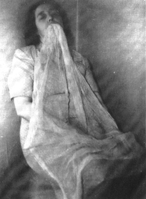

Tuesday, January the 18th, 2005
back to: title, date or indexes
Having read the above item, would you like to experience the world through a film of ectoplasmic goo? One way to begin is to do as Minnie Harrison did. She is shown here, in Middlesbrough in December 1948, creating her own extrusion of ectoplasm.

Ectoplasm emanating from the Medium's mouth. Taken in complete darkness using Kodak infra-red plate. Exposure by means of powerful ‘Sashalight’ bulb through ‘Wratten’ glass filter—extremely deep ruby-red colour. The Ectoplasm is emanating from her mouth and in this form it is quite transparent, very similar in appearance and texture to chiffon. (From The Minnie Harrison Page).